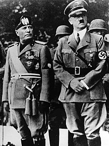

|
Las causas bélicas del estallido de la Segunda Guerra Mundial son, en Occidente, la invasión de Polonia por las tropas alemanas y, en Oriente, la invasión japonesa de China, las colonias británicas, neerlandesas y posteriormente el ataque a Pearl Harbor.
La Segunda Guerra Mundial estalló después de que estas acciones agresivas recibieran como respuesta una declaración de guerra, la resistencia armada o ambas, por parte de los países agredidos y aquellos con los que mantenían tratados. En un primer momento, los países aliados estaban formados tan solo por Polonia, Reino Unido y Francia, mientras que las fuerzas del Eje las constituían únicamente Alemania e Italia en una alianza llamada el Pacto de Acero.
A medida que la guerra progresó, los países que iban entrando en la misma (por ser atacados o tener tratados con los países agredidos) se alinearon en uno de los dos bandos, dependiendo de cada situación. Ese fue el caso de los Estados Unidos y la URSS, atacados respectivamente por Japón y Alemania. Algunos países, como Hungría o Italia, cambiaron sus alianzas en las fases finales de la guerra.
|

|